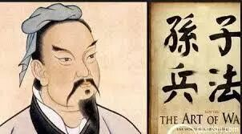
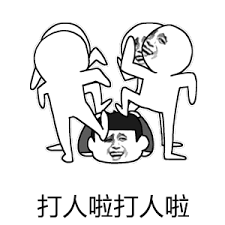
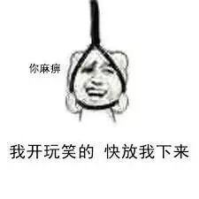
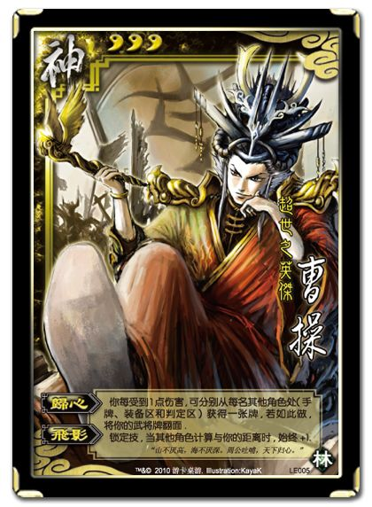
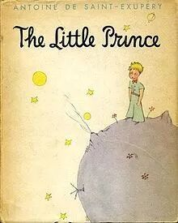
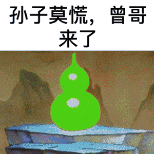

--------点击蓝字关注我--------
--------点击蓝字关注我--------

最近在听得到上华杉讲的《孙子兵法》的课，感觉蛮有意思的。不过我今天真的有点困，快睡觉了，就少码点字吧。
整个课程讲了很多有意思的点，我先随便挑几个有意思的点讲一下，安利一下这个课。
一. 上兵伐谋
《孙子兵法》这里讲到的谋，并不是说打仗要用计谋，而是直接伐掉对方的主谋，或者伐掉对方想打仗的念想，自己不想打了。“百战百胜，非善之善者也，不战而屈人之兵，善之善者也。”
我觉得这个还蛮反常识的。我们日常生活中也是类似的，很多时候要达到目的不一定非得干掉对方。让对方不想打了，跟你和解甚至投降，要比费尽力气打败对方省力得多。
二. 以多胜少
《孙子兵法》里强调，打仗要想赢，关键是要比别人兵多，尽量只打稳赢的仗。
克劳塞维茨说，一倍以上的兵力优势就足以打败任何优秀的将领。
我觉得这个说得蛮有道理的。那些以少胜多的故事确实会被广为传颂，名声很好听。不过真正大概率会发生的事情，还是以多胜少。所以作为一个只能尝试一次的个体，最好还是站在多的那一边。

三.先胜后战
《孙子兵法》里提到，善于作战的人能让自己始终立于不败之地，又不会错过敌人出现败相的时机。一旦敌人自己作死，就顺势帮他一把。

所以善于作战的军队在战斗前已经胜利了，在胜券在握的时候，再选择代价最小的时间窗口去作战。
我记得有一本泡学的书里曾经说过，告白是凯旋曲而不是冲锋号，其实也是类似的道理。
四.别指望外援，好好培养亲兵
带兵打仗，一个非常重要的事情就是养兵，带队伍。孙子兵法里反复强调养兵的重要性。
曹操是一个《孙子兵法》的忠实信徒，还给这本书写了很多注解。在谈到养兵的时候，他注解了自己的体会，谈到两个养兵的关键。
一是权利均，就是说你要能够驾驭你的部队，要让部队的数量控制在你能指挥的范围内，不要超出了自己的能力范围。
二是厮养足，就是说你要跟大家同吃同住同劳动，有福同享有难同当，一起摸爬滚打。

厮养的意思其实跟驯养差不多。《小王子》里小王子遇到狐狸的这一段，说出了驯养的本质。
”驯养的意思就是建立联系，对我来说，你只不过是个小男孩，就像其他千万个小男孩一样。我不需要你。你也同样用不着我。对你来说，我也只不过是一只狐狸，就跟其他千万只狐狸一样。然而，如果你驯养了我，我们将会彼此需要。对我来说，你就是宇宙间唯一的了；我对你来说，也是世界上唯一的了”
驯养的过程能把一个普通的个体变成一个特殊的个体。在工作中我们与同事，领导的日复一日的相处让我们彼此之间完成了更加深入的信任检验。在两性关系中，也正是这种日复一日的相处把两个个体之间的关系变得更加特殊了。
“人类不再有时间去了解事情了，他们总是到商店里买现成的东西，但是，却没有一家商店贩卖朋友，所以，人类就渐渐没有朋友了。如果你想要一个朋友，那就驯养我吧！”
这个世界上确实没有购买朋友的商店，但是却有购买员工的商店，也就是猎头公司。不过从猎头公司挖来的人，不管听起来多么的牛逼，由于没有完成驯养的过程，都不能委派太重要的任务。有的公司很喜欢从外面空降领导，因为觉得自己内部的人员水平不够，就是不懂得驯养之道，不懂得养兵之道。

完
